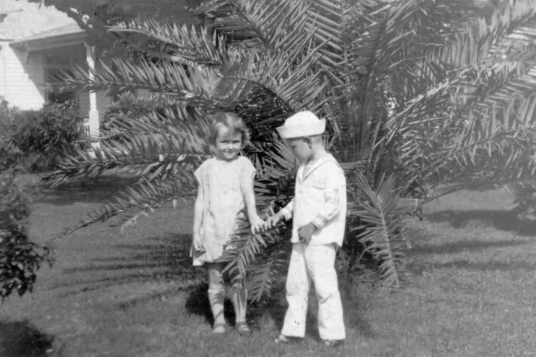

Según la leyenda, en 1904, un niño llamado Robert Eugene “Gene” Otto que vivía con sus padres en Key West, Florida, en Estados Unidos, recibió un particular regalo por parte de una criada: un muñeco vestido de marinero de 90 centímetros de altura, relleno de paja, que abrazaba a un león de peluche.

El joven Gene Otto, a la derecha, tiempo antes de que le regalaran al muñeco Robert
El juguete fue bautizado con el mismo nombre que su dueño, Robert. Pero la familia desconocía que el personal doméstico, originario de Bahamas, practicaba magia negra y vudú y que el muñeco había sido “hechizado”.
En los primeros días de convivencia con el marinero, los padres de Gene lo escuchaban hablar solo en su habitación. El niño les dijo que dialogaba con el muñeco durante gran parte del día, lo que los empezó a preocupar.
Asimismo, empezaron a suceder extraños acontecimientos en la casa. Cuando la familia Otto salía del hogar, los vecinos atestiguaban que Robert se asomaba por las ventanas de la vivienda.
Pero esto no era todo. Al corto tiempo, Gene empezó a tener aterradoras pesadillas que tenían como protagonista al juguete que se movía solo, se reía de forma macabra y deambulaba por la noche.
Hasta que una noche, mientras la familia dormía, se escuchó un estruendo en la habitación de Gene. Los padres, alarmados, corrieron hasta el cuarto y se encontraron una espantosa escena. Los grandes y pesados muebles estaban tirados en el suelo y el muñeco yacía en los pies de la cama del niño mirando a la puerta con una sonrisa macabra en su rostro.
”¿Qué hiciste?”, le preguntaron al niño.
“Yo no fui, fue Robert”, respondió.
Aterrorizados, los Otto tomaron al marinero y lo arrojaron al ático.
El niño jamás reveló qué había ocurrido realmente esa noche. Los años pasaron y Gene se fue olvidando de su juguete, que empezó a juntar polvo en la recóndita habitación.
A sus 125 años, Robert aún viste con el traje de marinero y sostiene a su oso de peluche en brazos
Al igual que sucedió con Gene, la niña empezó a tener pesadillas pero, a diferencia de su antecesor, ella se despertaba desesperada acusando al muñeco de tratar de asesinarla. Myrtle sabía que tenía que deshacerse de Robert, así que decidió donarlo al museo Martello Gallery-Key West Art and Historical en 1994, que es donde se encuentra actualmente.
Los escritos y testimonios sobre su leyenda se sitúan en ese museo, donde perduró con los años entre los trabajadores de la galería. Todavía abraza su león de peluche y viste su traje blanco de marinero, pero sigue dando que hablar.
Algunos trabajadores del museo afirman que en el mes de octubre el muñeco se vuelve más “activo”, y por las noches se pueden oír golpeteos contra el vidrio de la recámara transparente donde se encuentra. Y no sólo eso, pues a veces el muñeco aparece levemente recargado sobre la vitrina de exhibición, como si se hubiera movido por sí mismo.
Lo más curioso, en todo caso, es que se comenta que al fotografiarlo o grabarlo en vídeo, las cámaras dejan de funcionar o bien las fotos aparecen borrosas o defectuosas. Los encargados del museo y la misma leyenda que rodea al muñeco Robert afirma que los visitantes deben pedirle permiso si quieren sacarle una foto, pues de lo contrario una posible maldición podría recaer sobre éstos. Se comenta, de hecho, que la gran cantidad de cartas y fotografías que pueden verse pegadas en las paredes del cuarto donde se encuentra Robert son solicitudes de gente que lo fotografió sin permiso y que le ruegan que les levante la maldición que parece haber caído sobre ellos.
Hasta la fecha, el muñeco inspiró la saga cinematográfica de Chucky -que consta de ocho películas- y otros cuatro filmes bajo su propio nombre -Robert, La maldición del muñeco Robert, El juguetero y La venganza del muñeco Robert-. Y probablemente vendrán otras, porque ni sus cuidadores ni los fanáticos de lo oculto desconocen que la terrible leyenda de Robert es demasiado grande para su pequeña jaula de cristal.